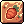
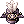
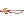
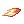
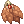

Ahrya Picky Peck Doram Guide
| This guide has not been updated in a while. | ||
|---|---|---|
| Information on this page may be obsolete and outdated. Please refer to the author for information on future updates. |
||
| Picky Peck Doram | |||||||||||||||||||
|---|---|---|---|---|---|---|---|---|---|---|---|---|---|---|---|---|---|---|---|
| Job Base: | Summoner | ||||||||||||||||||
| Written By: | Ahrya | ||||||||||||||||||
| |||||||||||||||||||
Overview
Unlike the main classes who have so many pre-requisite skills that has mostly became obsolete or other side skills that are simply not good at all, Dorams simply have one tab of skills that are neatly divided into 3 rowed sections, from which the cat can just pick one or two main routes to put their skill points into You may already know how devastating is the offensive power of physical summoner, but if you don't, you can try it on your own. Picky Peck can be easily used as the primary damaging skill against MvP using Earthworm Charms achieving even more than 200k per hit if wearing the right equipment and also doubles its damage when the target is below 50% of its HP. The damaging skills of physical Doram count as ranged damage, so ranged damage bonuses are priority.
Stats
- STR: Your most important stat. Increases carry weight, ATK and weapon damage.
- AGI: Increases flee and attack speed.
- VIT: Increases soft DEF and total health. Increases resistance to some status effects and reduces their duration.
- INT: Increases soft MDEF, MATK, total SP, and reduces variable cast time.
- DEX: Your second most important stat. Increases HIT and ATK by 1 for every 5 points. Reduces cast time and increases ASPD. Also can boost your Picky Peck damage.
- LUK: Increases critical rate, and ATK by 1 for every 5 points. Add some perfect dodge.
Skills
Main Skills
 All Basic Skills ( You have no choice here )
All Basic Skills ( You have no choice here )
| Skill | Notes |
|---|---|
| Inflicts 300%~700% ranged physical damage to a single target. When base level is above 30, it has a chance to be dual-cast. Consumes 10~18 SP | |
|  Lunatic Carrot Beat | Inflicts 300%~700% ranged physical damage to a target and all enemies within a 3x3~7x7 area around it.If a Carrot is consumed, has a chance to inflict Stun. Consumes 15~35 SP |
| Increases the caster's AGI by 20~40 for 60~100 seconds; while also increasing movement speed for the duration. It also increases the damage of life based skills while active. Consumes 12~20 SP | |
| Increase the damage of Picky Peck, Scar of Tarou, Lunatic Carrot Beat amd Spirit of Savage based on the Summoner's remaining HP: |
Secondary Skills
After the 185 update, 5 job levels for the summoner class were also added, giving more freedom to choose the initial skills from the support or magic tree. The usability of each one will be detailed later in the build construction.
| Skill | Notes |
|---|---|
| Gives ATK and MATK +10% to all party members on the screen for 60~180 seconds. Consumes 44~60 SP and a Shrimp. | |
| Snares one target and prevent them from moving for 7~15 seconds, while dealing a 100 Poison-element damage per second. Consumes 10~18 SP |
Equipment
Uppers
| Item | Type | Lowest Price | Way to obtain | Notes |
|---|---|---|---|---|
 Rideword Hat [1] Rideword Hat [1]
|
Upper | Market: ... | Quest | HP/SP leech, useful for farming |
 Airship Captain's Hat [1] Airship Captain's Hat [1]
|
Upper | Market: ... | Cash Shop | Good all-around upper headgear. Can be shared with other classes |
|  Evil Marching Hat [1] | Upper | Market: ... | Cash Shop | An awesome end-game headgear. A +9 is recommended to overcome the Airship Captain's Hat |
 Fancy Feather Hat [1] Fancy Feather Hat [1]
|
Upper | Market: ... | Cash Shop | Probably your best end-game headgear. A +7 is recommended to overcome the Evil Marching Hat, become a monster at +11. |
 Heart Wing Headband [1] Heart Wing Headband [1]
|
Upper | Market: ... | Cash Shop | Less damage, more "spammability". Choose this one or Fancy Feather Hat [1] to be your endgame upper headgear.
|
Middles
| Item | Type | Lowest Price | Way to obtain | Notes |
|---|---|---|---|---|
 Angel Spirit [0] Angel Spirit [0]
|
Middle | Market: ... | Cash Shop | ATK and MATK +2%, STR +2. That simple, that good. |
 Black Frame Glasses [1] Black Frame Glasses [1]
|
Middle | Market: ... | Cash Shop | A good slotted middle headgear. INT +1, MDEF +2. |
 Cyclops Glasses [1] Cyclops Glasses [1]
|
Middle | Market: ... | Quest | A good endgame middle headgear. All Stats +1 with a slot. |
 New Wave Sunglasses [0] New Wave Sunglasses [0]
|
Middle | Market: ... | Quest | Reduces the global delay of skills by 10%. Choose this or Cyclops Glasses [1] to be your endgame middle headgear .
|
Lowers
| Item | Type | Lowest Price | Way to obtain | Notes |
|---|---|---|---|---|
 Gangster Scarf [0] Gangster Scarf [0]
|
Lower | Market: ... | Quest | Cheap and easy to acquire. ATK +5 |
|  Pirate Dagger [0] | Lower | Market: ... | Cash Shop | Same as Gangster Scarf. ATK +5 |
 Samurai Mask [0] Samurai Mask [0]
|
Lower | Market: ... | Cash Shop | Probably your endgame lower headgear if you have more than 500 ATK. Increase physical attack damage +1%. |
|  Poison Breath [0] | Lower | Market: ... | Quest | Give you a lot of effects based on your stats points. Only works if you have a  Giant Snake Skin equiped. |
Armors
| Item | Type | Lowest Price | Way to obtain | Notes |
|---|---|---|---|---|
 Doram Elegant Suit [1] Doram Elegant Suit [1]
|
Armor | Market: ... | Fruit Pom Spider drops | Cheap choice of Dorams. Max HP + 15%, Max SP + 15%. Every refine: DEX +1, INT +1. And a lot more when equiped with Elegant Doram Manteau and Elegant Doram Shoes . |
 Ancient Armor of Rift [1] Ancient Armor of Rift [1]
|
Armor | Market: ... | Infinite Space Instance | Good all-around Armor for Summoner due to the MaxHP bonus. Can be enhanced twice. Recommend:  STR +4, STR +4,. STR +4, STR +4,.
|
| Armor | Market: ... | MagdunF3 drops | Balanced endgame Armor. At +9 provides ATK +100 and DEF +150. | |
| Armor | Market: ... | MagdunF3 drops | One of the best endgame armours for your Picky Peck Doram. At +7 provides ATK +150. | |
 Excellion Suit [0] Excellion Suit [0]
|
Armor | Market: ... | Verus Equipment Exchange | Recommend:  STR Supplement Reactor, STR Supplement Reactor, ATK Supplement Reactor, ATK Supplement Reactor ATK Supplement Reactor, ATK Supplement Reactor
|
Weapons
| Item | Type | Lowest Price | Way to obtain | Notes |
|---|---|---|---|---|
 Elaborate Foxtail Replica [2] Elaborate Foxtail Replica [2]
|
Weapon | Market: ... | Assault Basilisk and Antler Scaraba at 0.3% drop rate | Really good weapon. Also 2 slots. |
 Elaborate Yellow Foxtail Replica [1] Elaborate Yellow Foxtail Replica [1]
|
Weapon | Market: ... | Charge Basilisk at 0,1% drop rate | Only 1 slot but can be enhanced twice. Recommend: Expert Archer 6, Expert Archer 6 |
Shields
| Item | Type | Lowest Price | Way to obtain | Notes |
|---|---|---|---|---|
 Valkyrja's Shield [1] Valkyrja's Shield [1]
|
Shield | Market: ... | Valkyrie drops | Good defensive shield. Adds 20% resistance to Water, Fire, Undead and Shadow properties. Also MDEF +5. |
 Cursed Knight's Shield [1] Cursed Knight's Shield [1]
|
Shield | Market: ... | Cash Shop | Good overall shield. Increases attack speed by 10%, Atk + 3%, Matk + 3%, reduces damage taken by 7%.(And some upgrades until refine +12) |
 Mad Bunny [1] Mad Bunny [1]
|
Shield | Market: ... | Cash Shop | Best offensive choice. ATK +5%, MATK +5%, reflects 10% of the received short-ranged damage and some upgrades until refine +9 (At least +7 recommended). |
Garments
| Item | Type | Lowest Price | Way to obtain | Notes |
|---|---|---|---|---|
 Doram Elegant Manteau [1] Doram Elegant Manteau [1]
|
Garment | Market: ... | Pom Spider drops | Very cheap option. FLEE + 10. Increases resistance to neutral property damage by 5%. Every 2 refines: Perfect Dodge + 1, INT + 1, DEX + 1, LUK + 1. . |
| Giant Snake Skin [1] | Garment | Market: ... | Faceworm's Nest Instance | Goes well even without Temporal boots.
Recommend: +12 |
 Heroic Backpack [1] Heroic Backpack [1]
|
Garment | Market: ... | Monster Hunter, Gold Coins, Etc... | Need to be refined to +7 or +9. |
 Excellion Wing [0] Excellion Wing [0]
|
Garment | Market: ... | Verus Equipment Exchange | Recommend: ATK Supplement Reactor, ATK Supplement Reactor, ATK Supplement Reactor
|


{kind=link}
Shoes
| Item | Type | Lowest Price | Way to obtain | Notes |
|---|---|---|---|---|
 Doram Elegant Shoes [1] Doram Elegant Shoes [1]
|
Shoes | Market: ... | Charge Basilisk drops | Decent shoes. Max HP + 10%, Max SP + 5%, Max Hp increase every refine. |
| Shoes | Market: ... | MagdunF3 drops | Decent shoes at +9,giving ATK +2% and ATK +40. | |
 Hero Silverleather Boots [1] Hero Silverleather Boots [1]
|
Shoes | Market: ... | Prize of Hero | Ranged damage +5% and a bonus +1% for every refine pass +7 until +13 (11%). |
 Angel Poring Boots [1] Angel Poring Boots [1]
|
Shoes | Market: ... | Prize of Hero | All stats + 1 and enables the use of level 1 Heal. The important thing here are the enchants. Choose |
Accessories
| Item | Type | Lowest Price | Way to obtain | Notes |
|---|---|---|---|---|
 Chubby Earthworm Talisman [1] Chubby Earthworm Talisman [1]
|
Accessory | Market: ... | Malangdo Exchange | Reduces variable cast time of Picky Peck by 50% and increases the damage according to DEX and skill level. (No better options here). |
Cards
| Item | Type | Way to obtain | Notes |
|---|---|---|---|
 Essence of Evil STR 3 Essence of Evil STR 3
|
Other | Temple of Demon God Instance | Recommend for upper and middle headgears to maximize damage. |
 Hunter Fly Card Hunter Fly Card
|
Weapon | Hunter Fly in Geffen Dungeon 1st Floor. | Use 2x when farming to regain HP and SP. |
 White Knight Card White Knight Card
|
Weapon | Old Glast Heim Instance | Best all-around Weapon Card. ATK + 15 and increase damage inflicted on medium and large size monsters by 20%. |
 Pecopeco Card Pecopeco Card
|
Armor | Pecopeco | Max HP +10 %, that simple. |
 Porcellio Card Porcellio Card
|
Armor | Porcellio | Best all-around Armor Card. ATK +25, DEF -5. |
 Menblatt Card Menblatt Card
|
Garment | Menblatt in Eclage Field 01. | Increases ranged damage by 1% for every 10 base DEX. (12% when Dex= 120). |
 Green Ferus Card Green Ferus Card
|
Shoes | Green Ferus in Abyss Lake 1st Floor. | Easy to obtain Card if you need more HP. |
 Firelock Soldier Card Firelock Soldier Card
|
Shoes | Firelock Soldier in Amatsu Dungeon 1st Floor. | Great Card if you have access to +9 Shoes. |
 Outrageous Cookie Card Outrageous Cookie Card
|
Shoes | Tyrannical Cookie in Horror Toy Factory Instance. | Quite expensive Card but great for maximizing damage output. |
 Gold Scaraba Card Gold Scaraba Card
|
Accessory | All types of Gold Scaraba in Nightmare Scaraba Hole | Hard to obtain Card but great for damage output. |
Builds
The stat distributions below serve only as examples. Different players have different equipment and should tweak their stats based on their current equipment.
Early Game / Farming Build
Stats
- STR 120
- AGI 90
- VIT 90
- INT 50
- DEX 120
- LUK left points
Equipment
- Upper: Rideword Hat [1] with Essence of Evil STR 3
- Middle: Angel Spirit [0]
- Lower: Gangster Scarf [0]
- Armor: Ancient Armor of Rift [1] with Pecopeco Card
- Weapon: +7 or higher Elaborate Foxtail Replica [2]. with 2x Hunter Fly Card.
- Garment: +7 or higher Heroic Backpack [1] with Menblatt Card.
- Shoes: Doram Elegant Shoes [1] with Green Ferus Card
- Accessory 1: Chubby Earthworm Talisman [1]
- Accessory 2: Chubby Earthworm Talisman [1]
Strategy
Lure monsters carefully and kill weaker ones with Lunatic Carrot Beat them  Picky Peck to kill the remaining ones.
Picky Peck to kill the remaining ones.
Damage output Picky Peck build
Traduzir: Build focada 100% em dano, recomendada para jogadores que possuam sempre um grupo de amigos definidos, como no conta com reduo de aftercast nos equipamentos, nem bonus elevado de ASPD, recomendado o apoio de um poema de BRAGI (Colocar link para a skill).
Stats
- STR 120
- AGI 90
- VIT 90
- INT left points
- DEX 120
- LUK 50
Equipment
- Upper: +11 Fancy Feather Hat [1] with Essence of Evil STR 3
- Middle: Black Devil's Mask [1] with Essence of Evil STR 3
- Lower: Samurai Mask [0]
- Armor:
+9 Lava Leather Suit [1] with
Porcellio Card
- Weapon: +15 Elaborate Yellow Foxtail Replica [1] with Expert Archer 6, Expert Archer 6, White Knight Card Card
- Garment: +9 Heroic Backpack [1] with Menblatt Card.
- Accessory 1: Chubby Earthworm Talisman [1] with Gold Scaraba Card
- Accessory 2: Chubby Earthworm Talisman [1] with Gold Scaraba Card
Strategy
Stay behind party's tank, so you can deal enormous damage amount. Since you don't have enought Flee rate, be carefully and bring some potions while grinding.
Solo Minigun Picky Peck build
Traduzir: Build focada na reduo de after cast do seu Picky Peck. Apesar de ter o dano base um pouco menor que a build de cima, atinge um DPS muito prximo devido capacidade de spammar skill sem a necessidade de um grupo para apoiar.
Stats
- STR 120
- AGI 120
- VIT 50
- INT 50
- DEX 120
- LUK Left points
Equipment
- Upper: +9 Heart Wing Headband [1] with Essence of Evil STR 3
- Middle: New Wave Sunglasses [0]
- Lower: Gangster Scarf [0]
- Armor: +9 Excellion Suit [0], STR Supplement Reactor, ATK Supplement Reactor, ATK Supplement Reactor
- Weapon: +15 Elaborate Yellow Foxtail Replica [1] with Expert Archer 6, Expert Archer 6, White Knight Card Card
- Garment: +8 Excellion Wing [0], ATK Supplement Reactor, ATK Supplement Reactor, ATK Supplement Reactor
- Accessory 1: Chubby Earthworm Talisman [1] with Gold Scaraba Card
- Accessory 2: Chubby Earthworm Talisman [1] with Gold Scaraba Card
Strategy
Stay behind party's tank, so you can deal enormous damage amount. Since you don't have enought Flee rate, be carefully and bring some potions while grinding.
Leveling
Lv1 - Lv10
- Since we don't have tutorial quest for Doram, kill some leaf lunatics at spawn point until level 10
Lv10 - Lv50
- Payon Dungeon 1st and 2nd Floor. Remember to kill some Zombies first before Skeleton and Poporing; they are slow and have less HP.
Lv50 - Lv70
- Orc Dungeon 1st Floor. At this point you can lure some monsters and twoshot'em with Lunatic Carrot Beat.
Lv70 - Lv85
- Glast Heim Abbey (Take Eden Board 71-85 Quests for Wraith and Evil Druid together with Instructor Ur's Equipment Quests 70-79).
Lv85 - Lv115
- Lv115+
- Alternate between Gramps or Magma Dungeon 02 with Lunatic Carrot Beat and a lot of fly wings.
- Lv130+
- Try getting a
 Hunter Fly Card and Rideword Hat [1] to make solo farming and leveling easier
Hunter Fly Card and Rideword Hat [1] to make solo farming and leveling easier
- Try getting a
- Lv145+
- Sticking to Gramps and turn in quests (Unripe Acorn and Menblatt Wings farming in Eclage fild01)
- Lv175+
- Abyss Glast Heim, Magma Dungeon F3 and Gramps